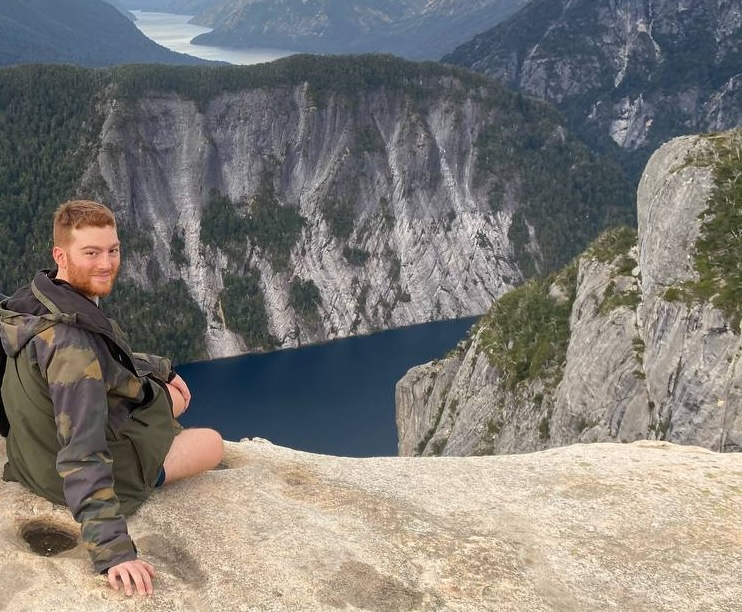

Este es mi espacio digital. Acá vas a encontrar contenido sobre mi vida profesional, incluyendo publicaciones científicas, proyectos, software, y (de vez en cuando) entradas de blog de interés general.
Mi nombre es Lucas Miranda. Nací y crecí en Buenos Aires, Argentina, donde estudié biología molecular y bioinformática en la Universidad de Buenos Aires. Recientemente completé mi doctorado en la Universidad Técnica de Munich, dirigido por Bertram Müller-Myhsok en el Instituto Max Planck de Psiquiatría. Si te interesa, podés leer mi tesis (en inglés) acá.
Desde junio de 2023, trabajo como investigador postdoctoral en el Instituto Max Planck de Bioquímica en Munich, Alemania, como parte del grupo de investigación de Machine Learning y Biología de Sistemas. Mi investigación actual se centra en el aprendizaje de representaciones de datos biológicos y médicos, con un interés particular en proteómica clínica y en series temporales relevantes para medicina, tales como historiales médicos electrónicos y datos de unidades de terapia intensiva.
Vivimos en tiempos emocionantes, donde los modelos de aprendizaje automático mejoran día a día en muchos dominios. Mi objetivo es aportar mi grano de arena al desarrollo de estas tecnologías en mmedicina, lo que en última instancia nos puede beneficiar a todos. Gracias por leer, ¡y espero que encuentres algo útil!
